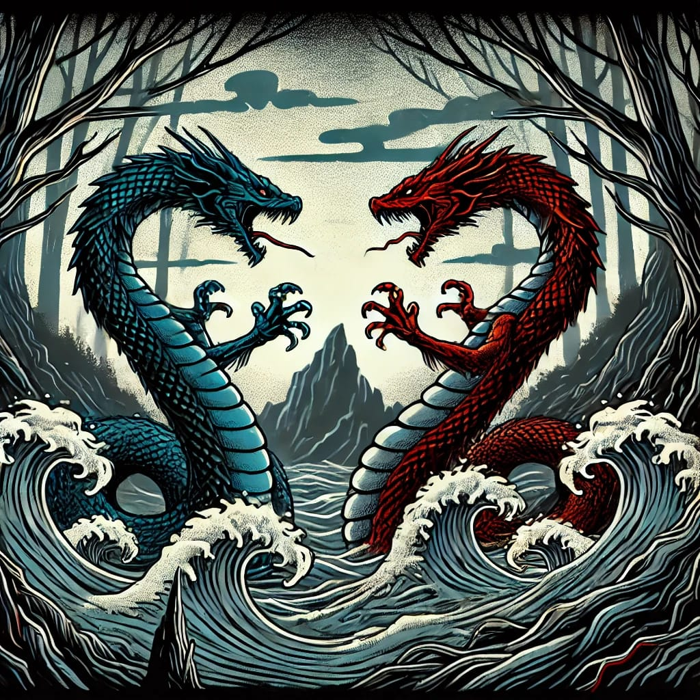

Ten Ten Vilu, conocido como el "Serpiente Tierra," es un espíritu protector en la mitología mapuche. Esta serpiente divina es el guardián de la tierra y los animales, en contraste con su rival, Cai Cai Vilu, el "Serpiente Agua," quien representa el mar y las inundaciones. Según la leyenda, ambos se enfrentaron en una épica batalla que dio forma a la geografía de Chiloé, con montañas y valles como las huellas de Ten Ten Vilu y fiordos y lagos como obra de Cai Cai Vilu. La victoria de Ten Ten permitió a los humanos sobrevivir en la tierra, pero la lucha dejó una lección sobre el equilibrio entre los elementos.